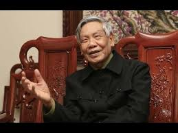

TỔNG BÍ THƯ LÊ KHẢ PHIÊU
 Đồng chí Lê Khả Phiêu sinh ngày 27-12-1931. Quê ở xã Đông Khê, huyện Đông Sơn, tỉnh Thanh Hoá. Ngày 19-06-1949, đồng chí gia nhập Đảng cộng sản Đông Dương. Đồng chí Lê Khả Phiêu là cán bộ trưởng thành từ cơ sở và từ trong quân đội. Trong các cuộc kháng chiến đã trực tiếp tham gia chiến đấu và chỉ huy chiến đấu liên tục ở các chiến trường Bắc - Trung - Nam, làm nhiệm vụ quốc tế ở nước bạn.
Từ năm 1964-1993, đồng chí đã đảm nhận các chức vụ: Chính uỷ kiêm Trung đoàn trưởng; Phó chủ nhiệm Chính trị Quân khu Trị Thiên; Chủ nhiệm chính trị Quân đoàn 2; Phó Chính uỷ kiêm chủ nhiệm chính trị Quân khu 9; Phó Bí thư Quân khu uỷ Quân khu 9; Thiếu tướng, Chủ nhiệm chính trị, Phó tư lệnh chính trị Mặt trận 719; Trung tướng, Phó Chủ nhiệm Tổng cục Chính trị; Thượng tướng, Chủ nhiệm Tổng cục Chính trị Quân đội nhân dân Việt Nam.
Năm 1991, tại Đại hội đại biểu toàn quốc lần VII của Đảng, đồng chí Lê Khả Phiêu được bầu vào Ban Chấp hành Trung ương Đảng. Tháng 06-1992, tại Hội nghị Ban Chấp hành trung ương Đảng lần thứ ba, khoá VII, đồng chí được bầu vào Ban Bí thư, sau đó được phân công Thường trực Ban Bí thư. Tháng 01-1994, đồng chí được bầu vào Bộ Chính trị. Năm 1996, tại Đại hội đại biểu toàn quốc lần thứ VIII, đồng chí Lê Khả Phiêu được bầu vào Ban Chấp hành Trung ương Đảng, uỷ viên Thường vụ, Thường trực Bộ Chính trị.
Ngày 26-12-1997, tại Hội nghị lần thứ tư Ban Chấp hành trung ương Đảng khoá VIII, đồng chí Lê Khả Phiêu được bầu làm Tổng Bí thư Ban Chấp hành trung ương Đảng.